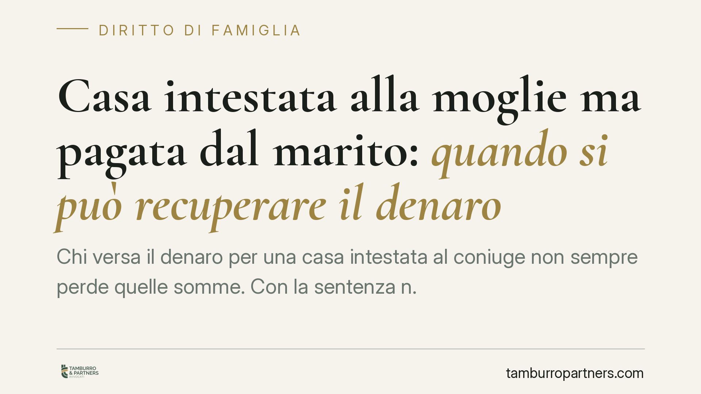

Casa intestata alla moglie ma pagata dal marito: quando si può recuperare il denaro
Chi versa il denaro per una casa intestata al coniuge non sempre perde quelle somme. Con la sentenza n. 21451/2025 la Cassazione precisa che il recupero è possibile tramite l'azione di arricchimento senza causa quando l'acquisto non serve ai bisogni della famiglia, ma avvantaggia terzi o la famiglia d'origine. Una distinzione che cambia l'esito di molte separazioni.

Il caso
Un coniuge paga, in tutto o in parte, l'immobile che viene però intestato all'altro. Finché il rapporto regge, la questione resta sullo sfondo. Al momento della crisi coniugale, chi ha speso il denaro si chiede se possa riaverlo indietro.
La Corte di Cassazione, con la sentenza n. 21451 del 25 luglio 2025, fissa un criterio preciso: la restituzione non è automatica, ma dipende dalla finalità dell'esborso.
Inquadramento normativo
Il punto di partenza è l'art. 143 del Codice civile, che impone a entrambi i coniugi di contribuire ai bisogni della famiglia in proporzione alle proprie sostanze e alla propria capacità di lavoro. Quando un coniuge paga per soddisfare le esigenze del nucleo – ad esempio la casa dove la famiglia vive – quell'esborso rientra nell'adempimento di un dovere legale. In questo caso non c'è nulla da restituire: il pagamento ha una sua causa, cioè una ragione giuridica che lo giustifica.
Diverso è lo scenario in cui l'esborso eccede quel dovere. Qui entra in gioco l'art. 2041 c.c., che disciplina l'arricchimento senza causa: chi si è arricchito a danno di un altro, senza una giustificazione giuridica, deve indennizzarlo nei limiti dell'arricchimento. È un rimedio residuale, che opera cioè solo quando non esistono altre azioni esperibili.
La Cassazione collega le due norme. Se il denaro è servito a soddisfare i bisogni familiari, prevale l'art. 143 e nulla è dovuto. Se invece l'acquisto non risponde a quei bisogni ma avvantaggia soggetti estranei al nucleo – terzi o la famiglia d'origine del coniuge intestatario – allora manca una causa che giustifichi lo spostamento patrimoniale e si apre la via dell'azione di arricchimento.
Implicazioni pratiche
La decisione sposta l'attenzione sul perché è stato fatto l'acquisto, più che sul come è stato intestato l'immobile.
Se la casa pagata da un coniuge e intestata all'altro è stata la residenza familiare, difficilmente si potrà recuperare l'esborso: quel pagamento viene letto come contributo alla vita comune.
Se invece il denaro è servito, ad esempio, ad acquistare un immobile destinato ai genitori del coniuge intestatario, o un bene palesemente estraneo alle esigenze della coppia, la prospettiva cambia. In quel caso il pagamento non trova copertura nell'art. 143 e il coniuge che ha speso può agire per ottenere un indennizzo.
Resta fermo il carattere sussidiario del rimedio: l'azione di arricchimento non è utilizzabile se chi ha pagato dispone già di altri strumenti di tutela, come un mutuo intestato o accordi documentati tra le parti.
La pronuncia riguarda i coniugi, ma la logica è estensibile anche ai conviventi di fatto, per i quali manca l'obbligo contributivo dell'art. 143 e il tema della causa dell'esborso si pone in termini ancora più netti.
Cosa fare in concreto
- Documentate ogni versamento. Conservate bonifici, assegni e tracce dei pagamenti con causali chiare: la prova dell'esborso e della sua destinazione è decisiva.
- Ricostruite la finalità dell'acquisto. Chiarite se l'immobile era destinato alla famiglia o ad altri soggetti: è questo elemento a definire la possibilità di recupero.
- Verificate l'esistenza di altri rimedi prima di invocare l'art. 2041, perché l'azione di arricchimento è esperibile solo in via residuale.
- Formalizzate gli accordi quando acquistate. Un atto scritto che indichi chi paga e con quale titolo previene gran parte del contenzioso.
- Valutate la posizione prima della separazione, quando le prove sono ancora reperibili e i rapporti non sono irrigiditi.
La sentenza non introduce un diritto automatico alla restituzione: impone una valutazione caso per caso, in cui contano la destinazione reale del denaro e la qualità della documentazione disponibile. Consigliamo di affrontare la questione per tempo, con un'analisi puntuale della situazione patrimoniale.
---
*Contributo informativo a cura di Tamburro & Partners - Avv. Giuseppe Tamburro. Non costituisce parere legale.*
Ogni famiglia ha il suo equilibrio.
Separazione, divorzio, affidamento, assegno: se vuoi un confronto riservato su una specifica situazione, scrivi allo studio. Ti rispondiamo entro un giorno lavorativo.